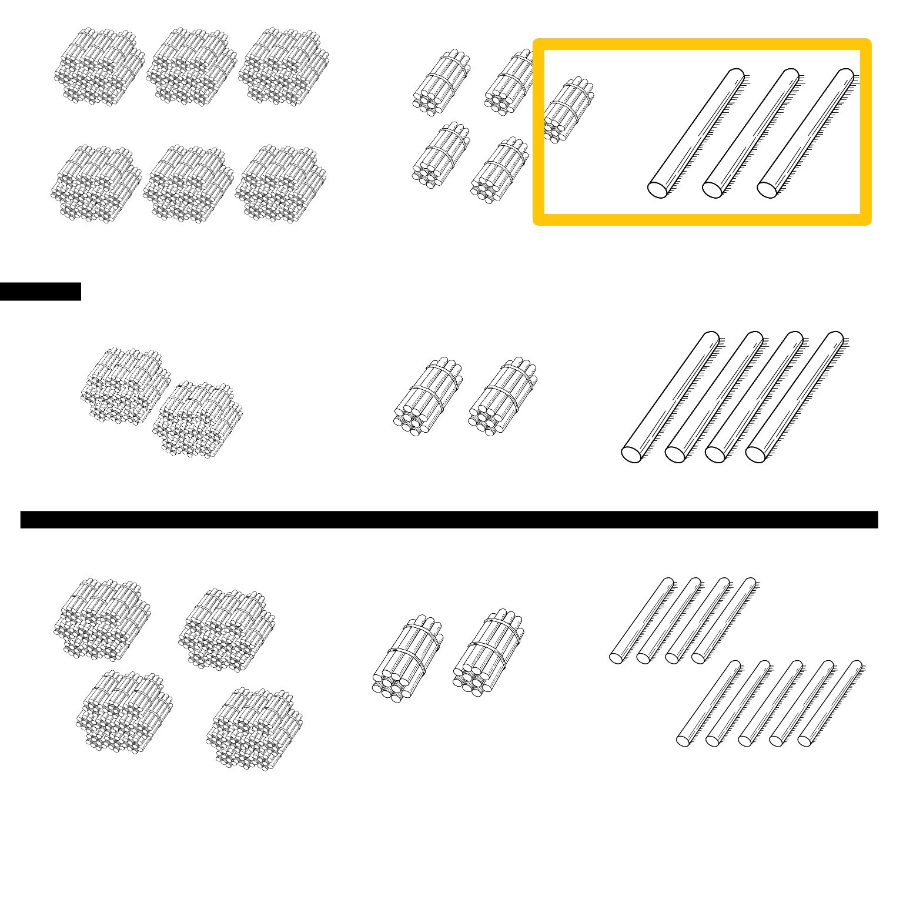
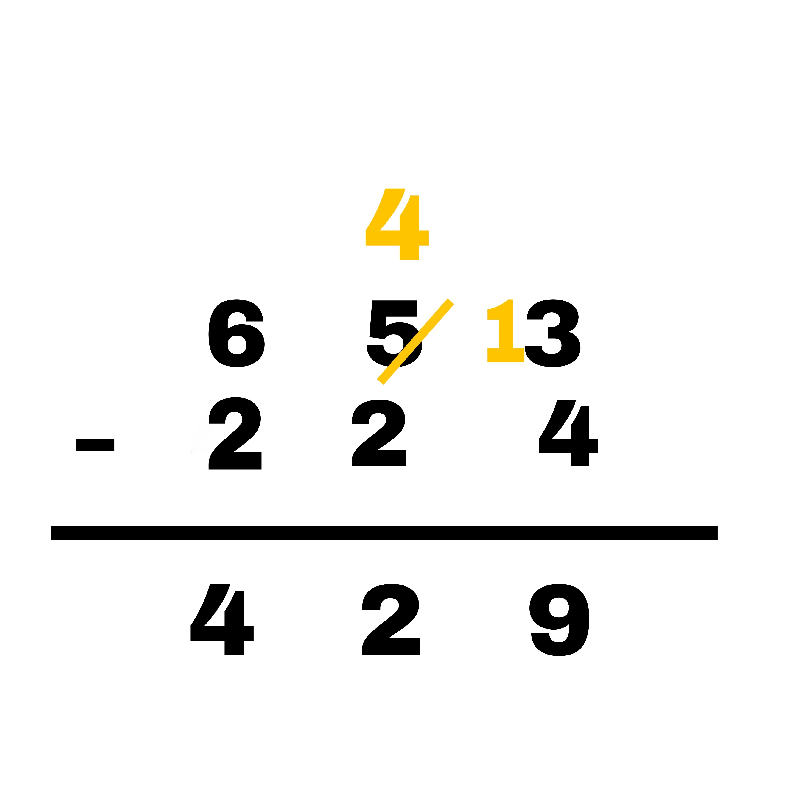
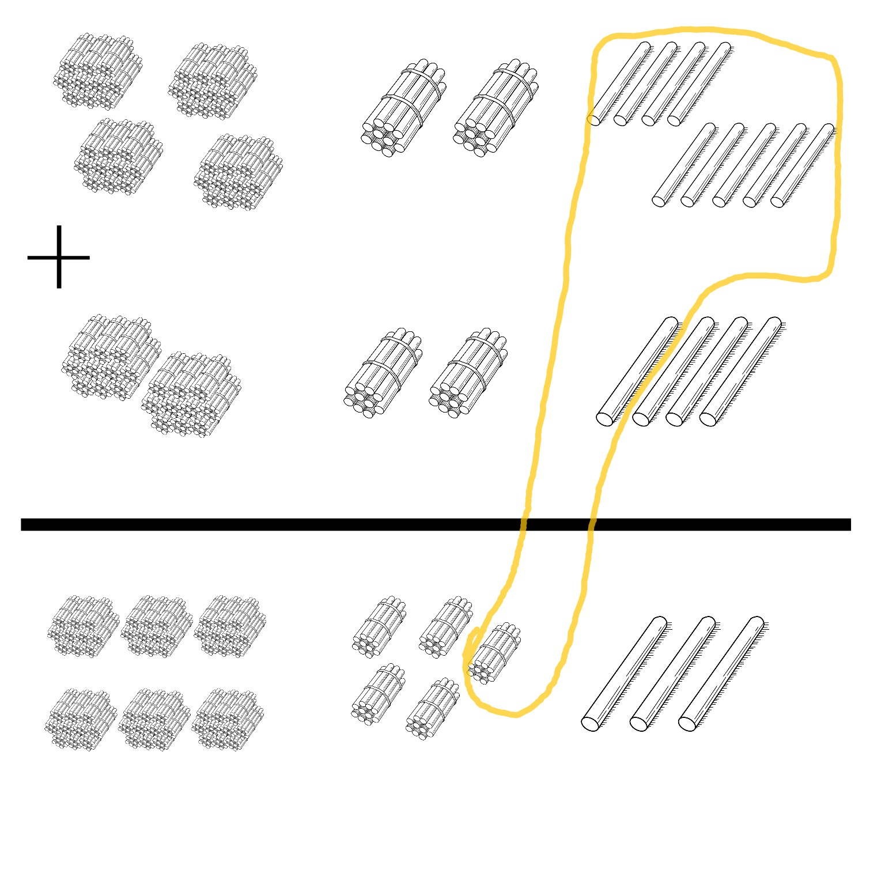
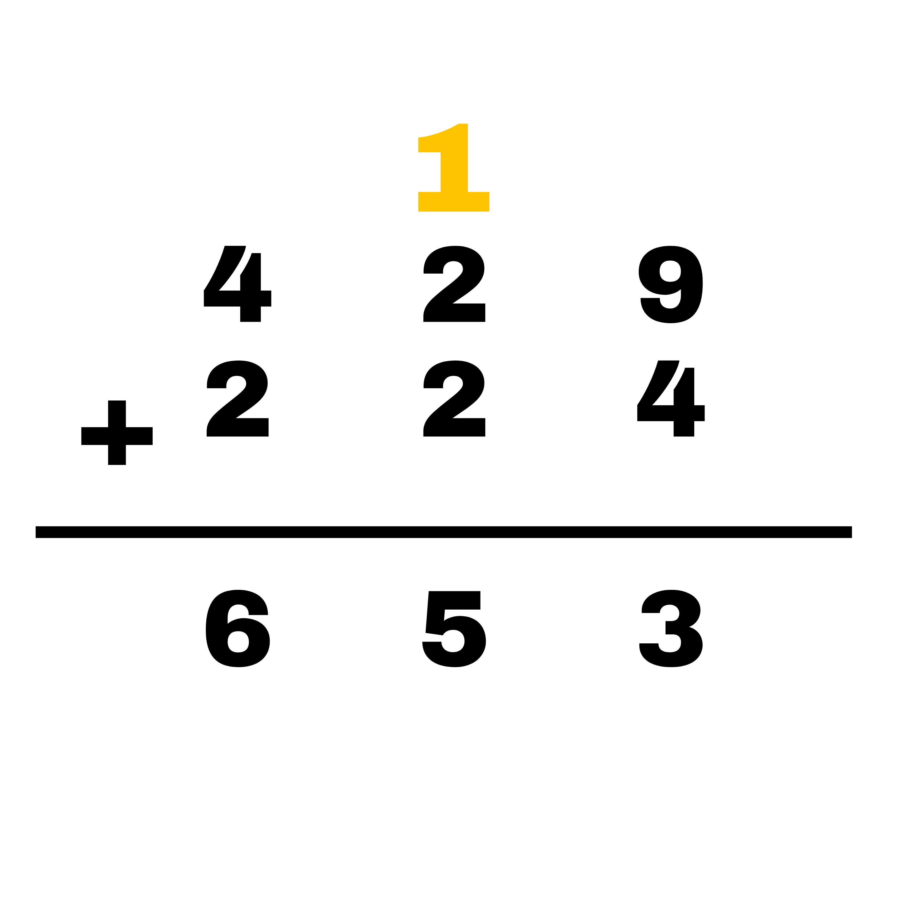

Initially, Maths started for counting and cavemen used images to count things such as cattle, livestock, etc.
And we had our first number system as images sign 🐐 🐐 🐐 🐑. That was some guy with 3 goats and a sheep, who started his new life in a cave with this, so he took a note of it on his wall. 😅
The downside of this number system was that you cannot add or subtract anything to it, if you add you will run out of space on the wall and subtract, it will messy.
This was called Egyptian hieroglyphs, Next came Roman numerals where you can count the things with numbers using this notation:
- 🐐
- 🐐🐐
- 🐐🐐🐐 .......
- 🐐 🐐 🐐 🐐🐐
If you look at the last example, to denote 5 goats we didn't use 5 sticks instead we used V to represent 5, which makes sense as five sticks would have taken a lot of space.
But still, addition and subtraction was bit of a problem, as there was no symbol for zero, and there is no way to calculate fractions and it has to follow too many rules to do the basic arithmetic operation, even basic counting was confusing.
You also cannot subtract a number from one that is more than 10 times greater. You can subtract 1 from 10 (IX) but you cannot subtract 1 from 100; there is no such number as IC. You would instead write XCIX (XC + IX, or 90+9).
V - I = IV
X - I = IX
C - I = IC XCIX
Hindu-Arabic numeral system
0,1,2,3,4,5,6,7,8,9,10,11.....
This number system is also known as the Place value number system, in this once a number exceeds the counting of 10 we group them and call them TENS and before that, we call it ONES, similarly if a number exceeds the counting of 100 we group them and call them HUNDREDS and so on.
These rules really help us to do the counting, addition, and subtraction easier. Let's understand this with the help of an example:
So if we are said to count the number of sticks, we generally start picking from the left and keep it on right and say the word 1,2...... till we reach the end of the sticks.
Let's say we counted it up to 653 sticks, but mathematically that is not the right way to do the counting or keep things because what if I ask you take out or subtract 224 sticks then again you have to count the 224 from the whole thing and separate which is very time consuming and irritating.
So the right way to do this is to group the numbers(sticks in this case) recursively in terms of ONES, TENS, HUNDREDS, and so on. So that maths becomes easier to apply to it like addition and subtraction.
Now borrowing in subtraction makes more sense to me than earlier when I was a kid because my parents forced me to play by the rules without proper reasoning.
Similarly, carry made more sense as you add up a number and it increases up from 9 then it jumps from ONES to TENS and forms a group, in this case, a bundle.
Which is hard to imagine in addition with numbers.
So this number system was easy to understand and could solve a lot of problems, so we stuck with it.